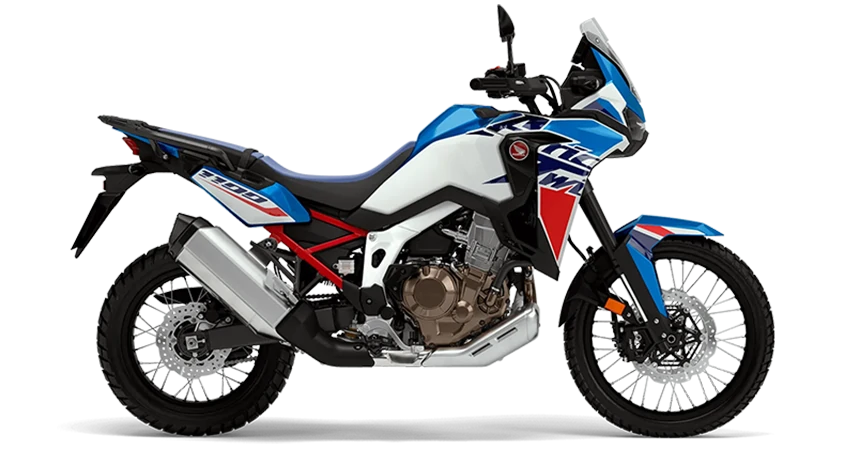
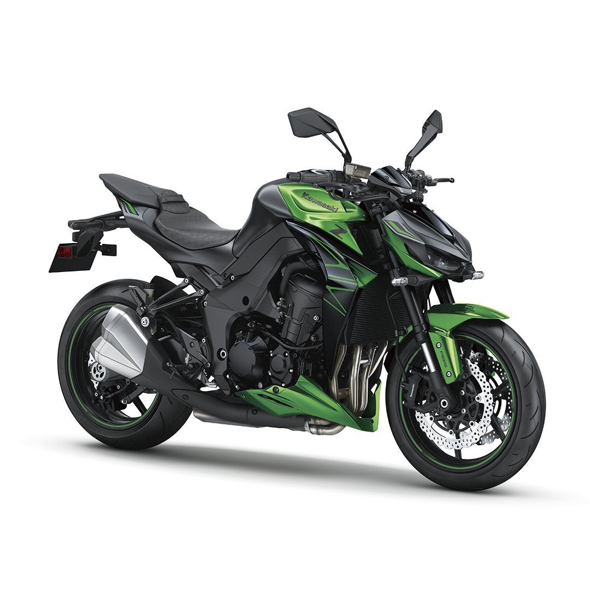

CIDADE MOTORCYCLES
Vendas e Revendas de motocicletas


| Modelo |
Ano |
Descrição |
Imagem |
| Triumph Tiger 1200 GT PRO |
2024 |
Com uma pilotagem incompáravel e um conforto incrível,
a nova GT Pro é o novo benchmark do motociclismo adventure
estradeiro, trazendo conforto, segurança e emoção em sua condução.A motocileta está 0KM e conta com um motor potência máxima
de 150CV a 9000rpm, 1.160cc e torque de 13 kgf.m a 7000rpm.
Além de possuir 3 anos de garantia com quilometragem ilimitada.
|

|
| Honda CB 600f Hornet |
2012 |
A Hornet CB600f é perfeita para os amantes de Honda, por ser uma clássica moto adorada por todos os motociclistas,
a motocicleta está com 27.036 KM rodados e disponível a pronta entrega, IPVA pago,
em perfeito estado de conservação, revisão realizada, documentação em dia, possui manual e chave reserva.
A moto é equipada com um motor de 600cc que injeta uma potência máxima de 96,5 cv a 12.000 RPM e torque de 6,43 kgf.m a 9.500 RPM.
Garantia de 90 dias.
|

|
| Honda CRF 1100L Africa Twin |
2024 |
Com o conjunto com a sua estrutura leve e esguia, proporciona uma pilotagem ágil e
um ótimo controle da aceleração, e junto da potência fazem um conjunto excelente
tanto para os trajetos em estradas sinuosas quanto para o off-road. A moto está 0KM,possuindo
um motor bicilíndrico da CRF 1100L Africa Twin possui 1.084cc,
entregando potência de 99,3 cv a 7.500 RPM
e torque de 10,5 kgf.m a 6.000 RPM.
Garantia de 3 anos
|
 |
| Kawasaki Z1000 |
2024 |
A nova Kawasaki 0KM da linha Z1000 conta com um motor de quatro cilindros em linha
com refrigeração líquida, DOHC de 16 válvulas e 1.043cc, garantindo uma pilotagem divertida e
oferecendo potência máxima de 142 CV a 10.000 RPM e torque máximo de 11,3 kgf.m a 7.300 RPM.
Garantia de 2 anos.
|
 |
| BMW S 1000 RR |
2022 |
A BMW S 1000 RR é uma moto superesportiva com um motor de quatro cilindros em linha e alto desempenho
possuindo motor com 999cc e potência máxima de 210 CV a 13.750 RPM e torque máximo de 11,3 kgf.m a 11.000 RPM.
A motocicleta está com 8.000KM rodados e disponível a pronta entrega, IPVA pago,
em perfeito estado de conservação, revisão realizada,
documentação em dia, possui manual e chave reserva.
Garantia de 90 dias.
|
 |